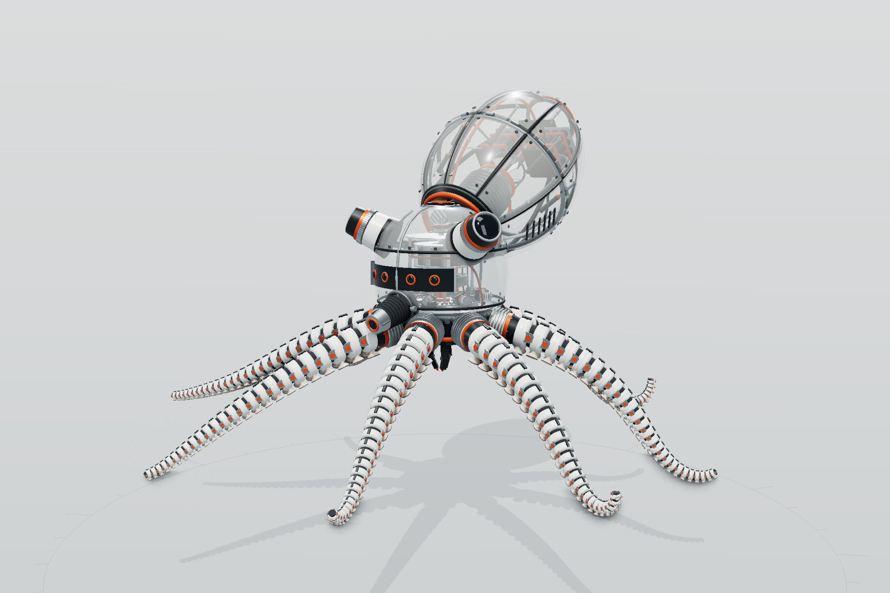
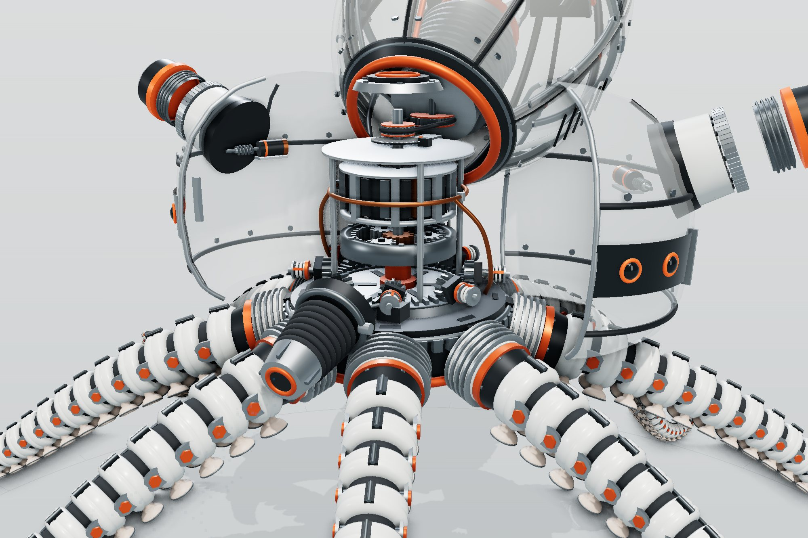
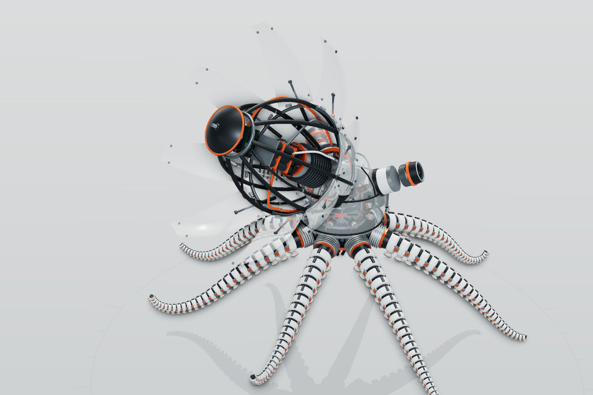
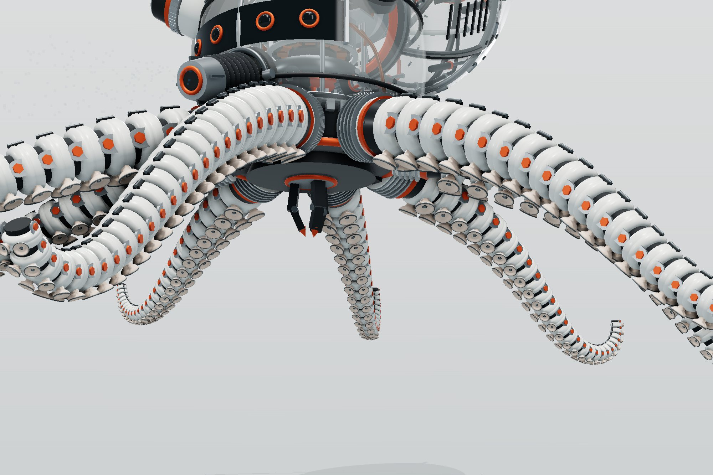

A mechanical octopus you can take apart.
Benthos-8 is an invented survey octopod that swims by jet, the way the real animal does. It stands in a
pale studio inside a ring of live instruments. You can open its head and watch the gear train turn,
hinge its mantle open like petals, pull an arm off the hub, or blow the whole machine apart and watch it
reassemble. Every part, gauge and chart reads from the same model.

- Type
- Concept · self-directed
- Discipline
- Real-time 3D · Web
- Machine
- Head, drivetrain, mantle, 8 arms
- Payload
- No models, no image files
The brief
Exploded diagrams and cutaways are how engineers explain machines, but on paper they are frozen. The
brief was to make one that moves: a machine you can open part by part while it keeps running, with
the instruments beside it telling the truth about what it is doing.
An octopus suits that well. It swims by squeezing water out of its mantle through a siphon, which
gives the machine one input that drives everything, and its body has plenty to open: a head, a
mantle and eight long arms.
Design decisions
One model drives everything
Mantle volume, stroke and nozzle area give flow, jet speed, thrust and pressure. The mantle
breathes with that model, the pump and motor turn at the speeds it sets, and every chart,
the 2D section, the callouts and a live hand check of the thrust formula read from it. No
number on screen is typed in.
Every gear at its real ratio
The drive motor feeds a 4:1 planetary. Its carrier turns a 48-tooth crown gear that meshes
with eight 12-tooth bevel pinions, one per arm, each winding a tendon spool through a
clutch. A 22-to-32-tooth timing belt takes the motor up to the jet pump.
It runs itself, then hands over
A cursor walks the console and presses the buttons. Any click, drag or key gives control to
the visitor; 25 seconds of quiet gives it back. Two sliders, water current and nozzle
diameter, feed the model directly, so you can push the machine until it drifts or
overpressures.
Inside the head
The head shell splits down the middle and swings open like a pair of doors, each half taking its
optic turret and that turret's worm-drive micro-motor with it. Inside is the drivetrain, stacked on
a deck: an outer-rotor motor with twelve copper windings, sixteen magnets and an encoder disc, a
copper coolant loop, the planetary gearbox on an orange carrier, and the crown gear with its eight
pinions, clutches and tendon spools. The spools wind to each arm's curl; the pinions never stop.

The mantle and the arms
The mantle is sixteen bolted ceramic panels with real thickness, laid in two courses over ring
frames and eight longerons. The upper course hinges open on linear actuators to show the finned pump
column and its impeller, two packs of nine cells, a control board on a mast and a clipped harness.
When exploded, the lower course steps outward and the parts inside rise out.

Each arm is twenty-five copies of one machined module, every one 5.5 % smaller than the last: a
chamfered ceramic shell, a rubber knuckle, clevis cheeks, a steel pin on the bend axis, a tendon
guide on top and a pair of silicone suction cups underneath. The arms reach out, droop and curl at
the tips, and stream back while the jet is firing. All 200 links of all eight arms are drawn as
instances, so they cost a handful of draw calls.

The numbers
| Mantle cavity | 9.0 L at rest · 18 % stroke cruising, 28 % flat out |
|---|
| Pulse | 1.6 s cruising, down to 0.7 s · 35 % of each cycle contracting |
|---|
| Siphon nozzle | Ø 38 mm by default, 24–52 mm on the slider |
|---|
| Thrust | 3.3 N mean and 18.7 N peak cruising · holds station up to about 1.5 m/s of current |
|---|
| Drivetrain | Motor → 4:1 planetary (sun 12, ring 36) → crown 48 → 8 pinions of 12 · belt 22 → 32 to the pump |
|---|
| Arms | 8 × 25 links, root radius 50 mm, tip 13 mm · 400 suction cups |
|---|
| Power | 480 Wh pack · about 55 W cruising, 8.7 h endurance |
|---|
| Rendering | Ambient occlusion, soft shadows, three quality tiers that step down on slow GPUs |
|---|
What went wrong first
The first version read as a toy: smooth capsules, a mantle shaped like a rugby ball and arms that
were stacks of plain cylinders standing the machine up like a tripod. The rebuild started from the
joint: once one arm link had a pin, a knuckle and a cup, the rest of the machine had a level of
detail to match. The arms were re-posed to reach out and curl so it floats instead of standing.
Ambient occlusion briefly made the closed shell look transparent. The pass renders its own normal
buffer with front faces only, so it missed the thin shell panels and shaded the parts inside onto
them. Rendering that buffer double-sided fixed it.
Outcome
A single page that explains a machine by letting people open it, with nothing to download beyond the
code. It opens in jet x-ray, so the frame, the pump and the drivetrain show through the shell from
the first frame. It runs in a current desktop browser; on a phone the panels fold away and you can
still orbit, open every part and use the sliders.